Un système entier, écrit en assembleur
Korin OS est un système d'exploitation 64 bits pour Raspberry Pi 4. Le noyau, les services, le serveur graphique et les apps de base sont en assembleur AArch64. Il sait s'assembler lui-même, et il fait tourner WebKit, GCC et .NET.
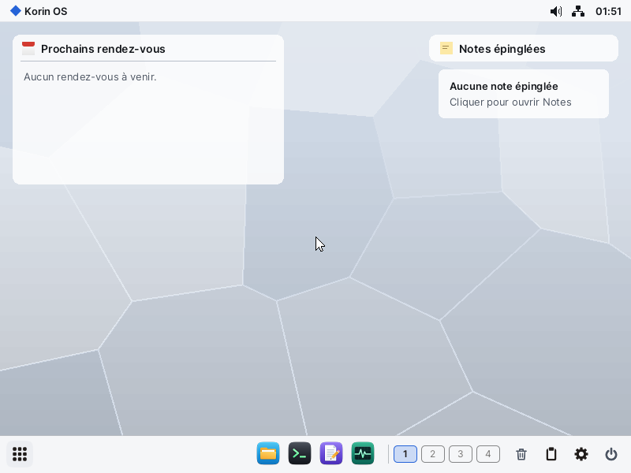
Le système
Conçu pour un vrai Pi 4 : il tourne sur un Waveshare PocketTerm35, avec son écran tactile et son clavier.
Micro-noyau
Un noyau de 76 Ko, quatre cœurs et un ordonnanceur préemptif. Pilotes, systèmes de fichiers et réseau tournent en services isolés.
Auto-hébergé
FASMARM est porté en AArch64 : sous Korin OS, il réassemble le noyau à l'identique, octet pour octet.
Elegant
Le serveur graphique : fenêtres, compositeur, espaces de travail et rastériseur TrueType écrit en assembleur.
Stockage et réseau
FAT32 et exFAT, clés USB, TCP/IP maison, Ethernet, Wi-Fi, serveurs telnet, FTP, VNC et RDP.
Le GPU du Pi
Mesa sur le V3D : OpenGL ES 3.0, WebGL dans le navigateur Jet, Skia et Avalonia accélérés.
Paquets signés
La commande pkg et l'app Logiciels installent le reste depuis un dépôt signé en ECDSA.
Ce qui tourne dessus
Une couche POSIX sert à porter ce qui existe déjà, sans en faire un but.
Développer sur place
GCC, G++, binutils, make, FreeBASIC, BASIC, le compilateur et le runtime .NET, Studio en Avalonia.
Travailler
Jet (WebKit), Letters, Sheet, Slides, Cardfile, Mail, Agenda, PDF, Photos, Paint, Vector.
Jouer
Émulateurs NES, Game Boy, SNES, GBA, N64, GameCube et 3DS, SuperTux, SuperTuxKart.
Les apps
Les apps principales, capturées sous Korin OS en 800 × 600, en français.
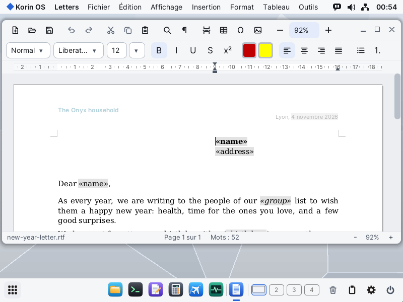
Letters
Le traitement de texte porté d'Onyx : styles, tableaux, images et publipostage, en RTF, DOCX et ODT.
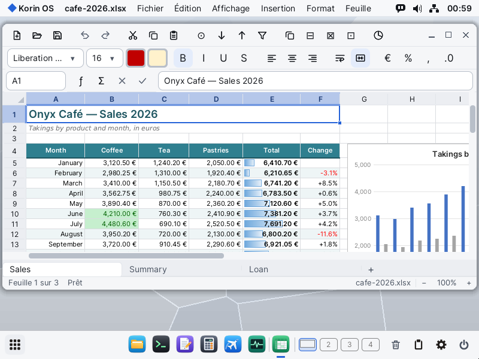
Sheet
Le tableur : formules, mise en forme et graphiques, avec les fichiers ODS et XLSX.
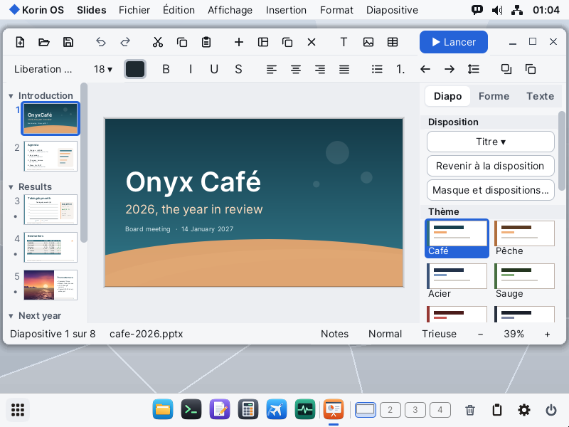
Slides
Les présentations : thèmes, dispositions et diaporama, avec les fichiers ODP et PPTX.
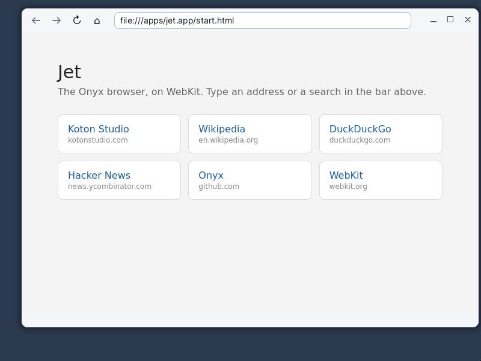
Jet
Le navigateur, sur WebKit, avec WebGL sur le GPU du Pi.
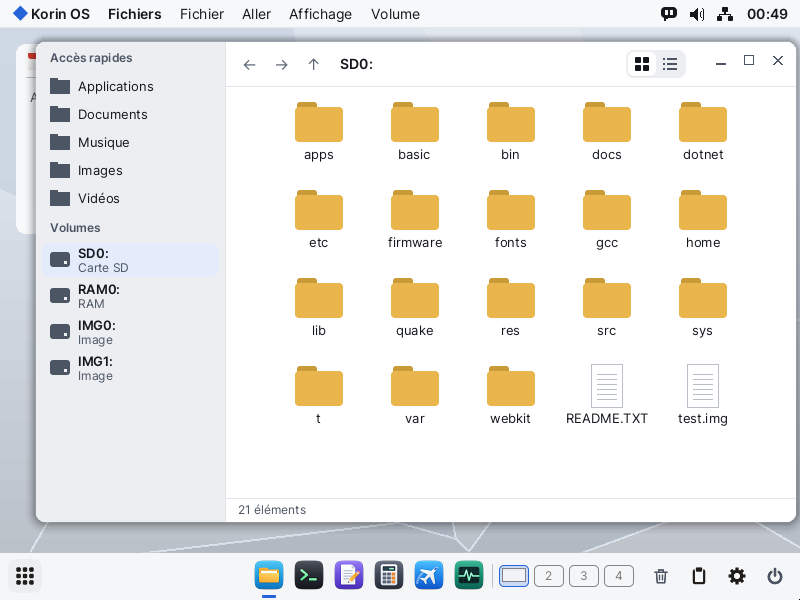
Fichiers
Le gestionnaire de fichiers : accès rapides, tous les volumes de la carte, disques en RAM et clés USB.
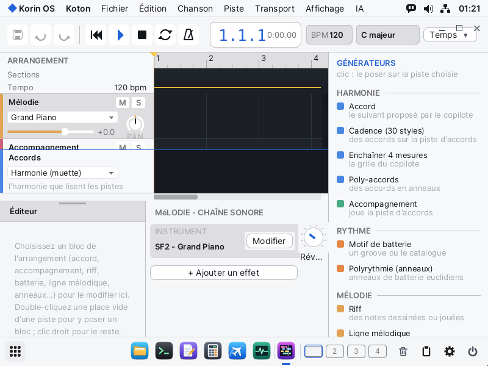
Koton Studio
Le studio de musique : arrangement, instruments, accords et générateurs.
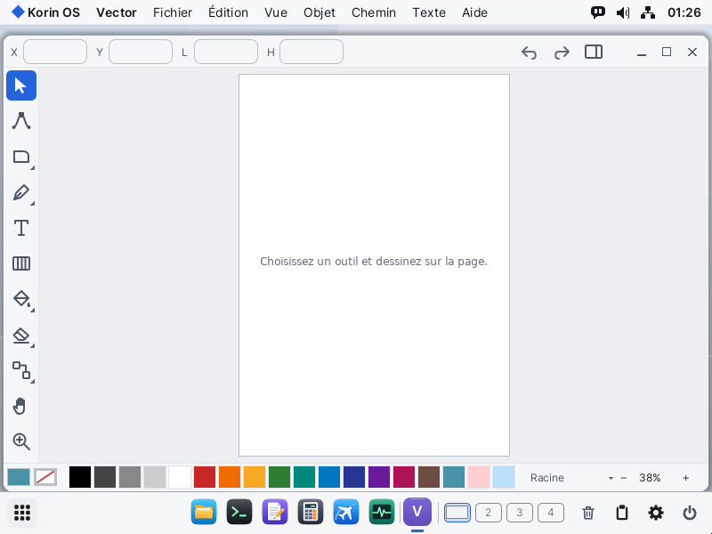
Vector
L'éditeur de dessin vectoriel, sur Skia, avec les fichiers SVG.
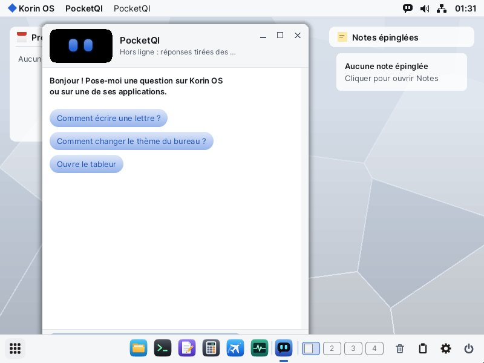
PocketQI
L'assistante, depuis la barre de menus : on lui demande par écrit comment se servir du système et de ses apps.
Écrans
Captures de la carte minimale, en 800 × 600, la résolution du PocketTerm.
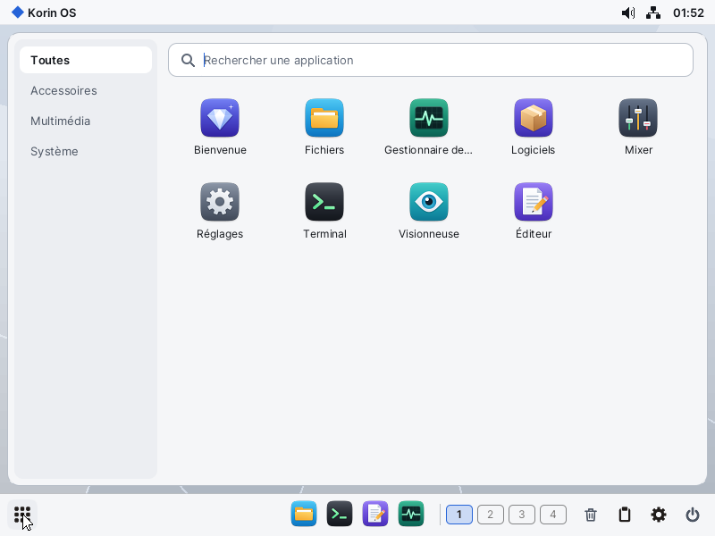
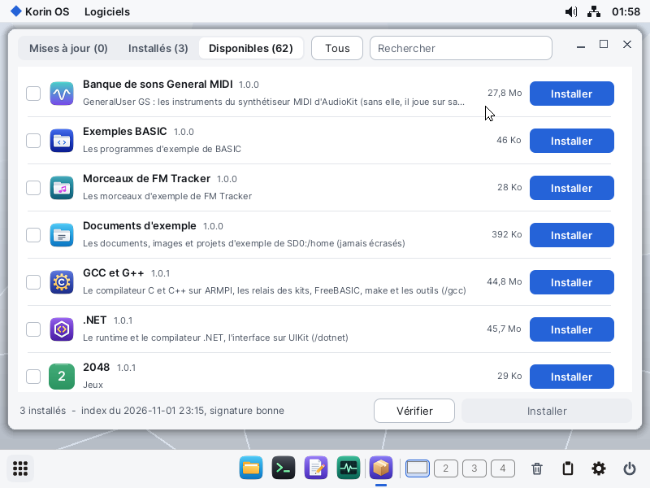
Construire
La partie en assembleur se construit sous Windows en quelques minutes, avec FASMARM fourni dans les sources.
- Assembler le système et le lancer dans QEMU :
.\build.ps1 run - Préparer une carte minimale de 30 Mo, à copier sur une partition FAT32 :
.\build.ps1 min sdcard - Installer le reste depuis Logiciels, une fois le système démarré.
Le guide complet, avec la chaîne WSL pour WebKit, Mesa, GCC, .NET et SDL, est dans docs/CONSTRUIRE.md.